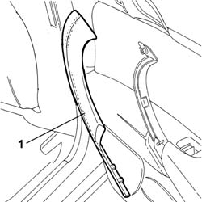
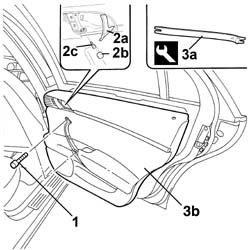
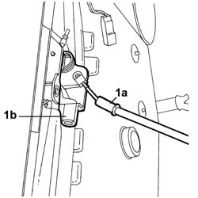
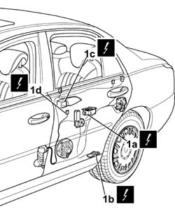
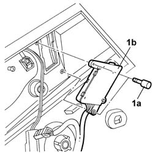
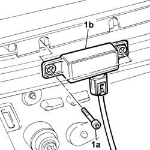
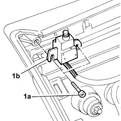

7010E10 Rear side door INNER PANEL - R.R. or Replace
- Path
- Procedures > 70 FITTINGS > 7010 passenger compartment rear side doors > 7010E REAR SIDE DOOR TRIM > 7010E10 Rear side door INNER PANEL - R.R. or Replace
- Kind
- repair procedure (removal / refitting; the operation number is the code)
- Applies to
- all engines; all production periods
- Interactive page
- https://sloeber94.github.io/elrnDB-lThss/en/#/80094
Applies to: all engines; all production periods
 Removing
Removing
 Refitting
Refitting- Disconnect the negative battery terminal.
See in Op. 7010M10 Rear door electric window control SWITCH - left or right - R.R.
1. Release the trim for the rear side door inner grip and remove it.

Applies to: all engines; all production periods
1. Undo the fixing bolts in the area of the grab handle.
2. Lift up the door opening lever (2a), release the rubber cap (2b) and undo the bolt (2c) underneath.
3. Remove the door panel (3b) using the tool (3a).
 | Description | Code | Function |
|---|---|---|---|
3a | Knife | 1.878.077.000 | Removing front side door inner panel |

Applies to: all engines; all production periods
1. Disconnect the flexible control (1a) for opening the door from the housing (1b) in the inner handle.

Applies to: all engines; all production periods
1. Working in the inner part of the panel, disconnect the electrical connectors (1a), (1b), (1c) and (1d).
 | Description | Connector |
|---|---|---|
1a | Electric window switch on left rear door | H053 |
| Description | Connector |
|---|---|---|
1a | Electric window switch on right rear door | H054 |
| Description | Connector |
|---|---|---|
1b | Left rear door light | G055 |
| Description | Connector |
|---|---|---|
1b | Right rear door light | G056 |
| Description | Connector |
|---|---|---|
1c | Left rear door handle light | G067 |
| Description | Connector |
|---|---|---|
1c | Right rear door handle light | G068 |
| Description | Connector |
|---|---|---|
1d | Driver's side rear ashtray light | G042 |
| Description | Connector |
|---|---|---|
1d | Passenger side rear ashtray light | G043 |

Applies to: all engines; all production periods
1. Undo the fixing bolts (1a) and remov ethe side door locking/unlocking switch (1b).

Applies to: all engines; all production periods
1. Undo the bolts (1a) and remove the door status indicator (1b).

Applies to: all engines; all production periods
1. Undo the bolts (1a) and remove the rear door locking/unlocking signal unit (1b).

Applies to: all engines; all production periods
Refitting
Removing- Position the rear door locking/unlocking signal unit and secure it using the bolts.
- Position the passive entry aerial and secure it using the bolts.
- Position the side door locking/unlocking switch and secure it using the bolts.
1. Work on the inner part of the panel and connect the electrical connectors.
| Description | Connector |
|---|---|---|
1a | Electric window switch on left rear door | H053 |
| Description | Connector |
|---|---|---|
1a | Electric window switch on right rear door | H054 |
| Description | Connector |
|---|---|---|
1b | Left rear door light | G055 |
| Description | Connector |
|---|---|---|
1b | Right rear door light | G056 |
| Description | Connector |
|---|---|---|
1c | Left rear door handle light | G067 |
| Description | Connector |
|---|---|---|
1c | Right rear door handle light | G068 |
| Description | Connector |
|---|---|---|
1d | Driver's side rear ashtray light | G042 |
| Description | Connector |
|---|---|---|
1d | Passenger side rear ashtray light | G043 |
Applies to: all engines; all production periods
- Check that the components involved are working properly.
- Reposition the rear door opening cable.
- Fit the inner door panel in place checking that the retaining springs are fastened.
- Tighten the bolts fixing the door panel.
- Reposition the side door inner grip trim.
See in Op. 7010M10 Rear door electric window control SWITCH - left or right - R.R.
- Connect the negative battery terminal.
Topics linked from this page (1)
Topics that link to this page (17)
- 5505B21 REAR DOOR built in WIRING (one) left or right - R.R.
- 5570T96 REAR SIDE SPEAKER (one), left or right - R.R.
- 7010A05 Rear side door WATER GUARD PROTECTION - R.R. or Position
- 7010A28 Rear side DOOR CHECK STRAP - R.R.
- 7010A42 Rear side door SEAL - R.R.
- 7010C11 Rear side door EXTERIOR HANDLE - R.R.
- 7010C48 Rear door opening INNER HANDLE/TRIM (one), lh or rh - r r
- 7010C57 Rear door opening device (one), left or right, complete with rod handle/lock - R.R.
- 7010D15 Rear side door DESCENDING WINDOW GLASS (one), left or right - R.R.
- 7010D16 Rear side door fixed window glass (one), left or right - R.R.
- 7010D18 Rear side door DESCENDING WINDOW GLASS CHANNEL (one), left or right - R.R.
- 7010D21 Rear side door DESCENDING WINDOW GLASS front GUIDE (one), left or right - R.R.
- 7010D30 GLASS SCRAPER (internal) (one) left or right for rear side door DESCENDING WINDOW GLASS - R.R.
- 7010D33 Rear side door DESCENDING WINDOW GLASS inner guide CHANNEL (one), left or right - r r
- 7010E42 Rear side door frame MOUDLING - R.R.
- 7010M21 Left or right rear door electric WINDOW - R.R.
- 7010N21 Central locking MOTOR/LOCK ASSEMBLY for one rear door, left or right - R.R.